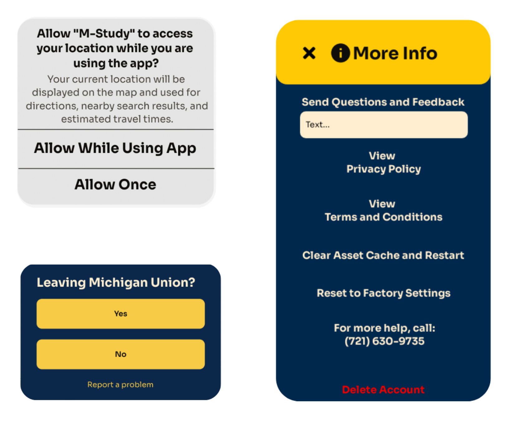

An app that allows UM students to find Study Spots without wasting time
Shows availability and hours
Finds the closest Study Spot available
Rate the Study Spot/leave reviews for other users
Users can “heart” their favorite Study Spots
Users can report whether Study Spots are open or not
Reserve all Private Spots in Campus on one app
Door sensors to track arrivals and exits
Updates the availability in the app
Pilot data was collected through Google Forms
Location data is collected only while using app (or manually allowed prior to each use)
User’s ‘favorites’ and ‘preferences’ for Spots are saved
Door sensors will be installed to aid basic traffic analysis
This, along with check-in data, will inform user of availability of open Spots relative to their location
User’s location is compared to the nearest MStudy Spots
User ratings move ranking of Study Spot
Users are prompted to rate and note of the conditions of the Spot (for noise level, seat availability, etc.)
Details of Spots for other users
Saved preferences will suggest ideal Study Spots for the user

Compatible with assistive technology
High color contrast of at least 4.5:1 for color blind individuals (1)
Auditory options for the visually impaired
Active voice option auto-enabled
Alt text available on images (9)
Easy-to-read text for the hearing and visually impaired
UM colors, compatible with Web Accessibility Guidelines
Larger text for easier navigation
Minimalist design
Different languages
 UX
UX Art
Art